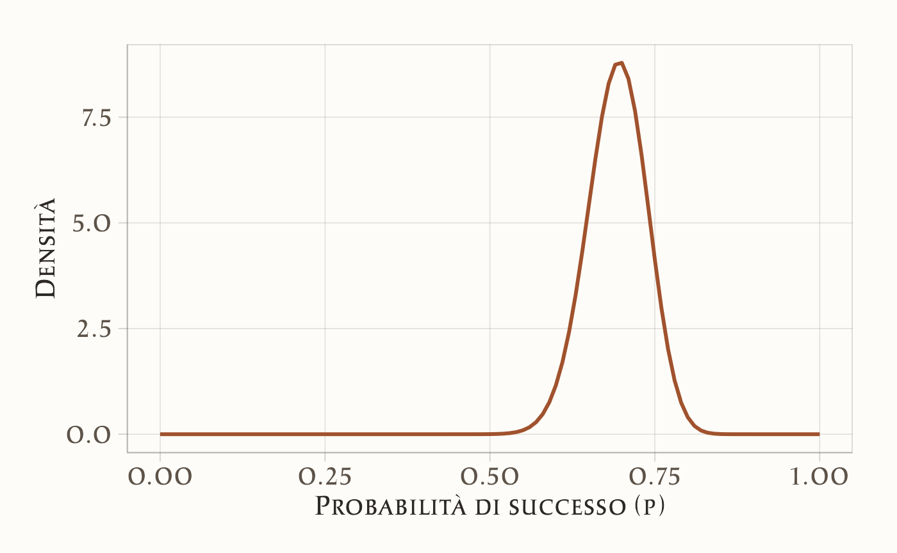

here::here("code", "_common.R") |>
source()50 Distribuzione predittiva a posteriori
“The general idea of posterior predictive checking is simple: if a model is a good fit to data, then replicated data generated under the model should look similar to the observed data.”
– Andrew Gelman, Xiao-Li Meng & Hal Stern, Posterior predictive assessment of model fitness via realized discrepancies (Statistica Sinica, 1996, p. 733)
Introduzione
L’ inferenza bayesiana non si limita alla stima dei parametri di un modello (quale, ad esempio, la probabilità \(p\) di successo in un esperimento a esiti binomiali). Un obiettivo di pari importanza consiste nella previsione di dati futuri, fondata sulle osservazioni già disponibili. La distribuzione predittiva a posteriori assolve precisamente a questo compito, integrando:
- l’incertezza sui parametri, rappresentata dalla distribuzione a posteriori,
- la variabilità intrinseca del processo generativo dei dati futuri.
In termini concettuali, la distribuzione predittiva a posteriori quantifica quali risultati futuri appaiono plausibili, alla luce dei dati osservati e del modello statistico impiegato per la loro interpretazione.
Panoramica del capitolo
- Previsione bayesiana: incorporare incertezza parametrica e variabilità intrinseca.
- Verifica di coerenza: valutare l’adeguatezza del modello ai dati osservati.
- Caso beta-binomiale: applicazione pratica del framework predittivo.
50.1 Definizione formale
Si considerino dati osservati \(y = \{y_1, y_2, \ldots, y_n\}\), generati da un modello probabilistico parametrizzato da \(\theta\), dove \(\theta\) può rappresentare una probabilità, una media, un vettore di coefficienti o altri parametri di interesse. La conoscenza iniziale su \(\theta\) è formalizzata attraverso una distribuzione a priori \(p(\theta)\). L’osservazione dei dati consente di aggiornare questa conoscenza mediante il teorema di Bayes, ottenendo la distribuzione a posteriori:
\[ p(\theta \mid y) = \frac{p(y \mid \theta)\, p(\theta)}{p(y)}, \] dove:
\(p(\theta \mid y)\) è la distribuzione a posteriori, che rappresenta l’incertezza su \(\theta\) condizionata ai dati osservati;
\(p(y \mid \theta)\) è la funzione di verosimiglianza, che specifica la probabilità dei dati dati i parametri;
\(p(\theta)\) è la distribuzione a priori;
\(p(y)\) è l’evidenza marginale, calcolata come
\[ p(y) = \int p(y \mid \theta) p(\theta)\, d\theta. \]
50.1.1 La distribuzione predittiva a posteriori
Sia \(\tilde{y}\) una nuova osservazione da prevedere. La distribuzione predittiva a posteriori \(p(\tilde{y} \mid y)\) fornisce la distribuzione probabilistica di \(\tilde{y}\) condizionata ai dati osservati.
50.1.1.1 Natura di \(\tilde{y}\)
- \(\tilde{y}\) rappresenta un dato futuro non ancora osservato;
- Nell’esempio binomiale, se \(y\) è il numero di successi in \(n\) prove, \(\tilde{y}\) può rappresentare il numero di successi in \(n_{\text{new}}\) prove future.
50.1.1.2 Relazione condizionale
- \(p(\tilde{y} \mid \theta)\) esprime la probabilità di \(\tilde{y}\) assumendo noto il parametro \(\theta\);
- Nel caso binomiale: \(p(\tilde{y} \mid \theta) = \binom{n_{\text{new}}}{\tilde{y}} \theta^{\tilde{y}} (1-\theta)^{n_{\text{new}}-\tilde{y}}\).
50.1.1.3 Integrazione sull’incertezza parametrica
Poiché \(\theta\) è incerto, la distribuzione predittiva a posteriori integra su tutti i possibili valori di \(\theta\), pesati secondo la distribuzione a posteriori:
\[ p(\tilde{y} \mid y) = \int p(\tilde{y} \mid \theta)\, p(\theta \mid y)\, d\theta. \tag{50.1}\]
50.1.1.4 Interpretazione
La distribuzione predittiva a posteriori \(p(\tilde{y} \mid y)\) rappresenta la migliore previsione probabilistica per dati futuri, incorporando tanto l’incertezza sui parametri del modello quanto la variabilità intrinseca del processo generativo dei dati.
50.2 Il modello Beta-Binomiale
Si consideri un esperimento binomiale consistente in \(n\) prove indipendenti, dove si osserva il numero di successi \(y\) (ad esempio, il numero di teste nel lancio di una moneta). L’approccio bayesiano si articola in tre fasi fondamentali:
Specificazione della distribuzione a priori La conoscenza iniziale riguardante la probabilità di successo \(p\) viene formalizzata attraverso una distribuzione Beta(\(\alpha, \beta\)), particolarmente appropriata per parametri definiti sull’intervallo unitario:
- Il parametro \(\alpha\) rappresenta un numero pseudo-osservato di successi;
- Il parametro \(\beta\) rappresenta un numero pseudo-osservato di insuccessi.
Questa parametrizzazione consente di incorporare conoscenze pregresse in forma di “evidenza virtuale”.
Aggiornamento bayesiano alla distribuzione a posteriori Dopo l’osservazione di \(y\) successi in \(n\) prove, la distribuzione a posteriori si ottiene mediante aggiornamento coniugato:
\[ p \mid y \sim \text{Beta}(\alpha + y, \beta + n - y). \]
Questa distribuzione caratterizza completamente l’incertezza residua sul parametro \(p\) condizionatamente ai dati osservati.
Costruzione della distribuzione predittiva a posteriori Per prevedere il numero di successi \(y_{\text{new}}\) in \(n_{\text{new}}\) prove future, si integra l’incertezza parametrica con la variabilità campionaria attraverso il seguente procedimento:
- Campionamento parametrico: \(p^{(s)} \sim \text{Beta}(\alpha + y, \beta + n - y)\)
- Generazione predittiva: \(y_{\text{new}}^{(s)} \sim \text{Binomial}(n_{\text{new}}, p^{(s)})\)
La distribuzione empirica dei valori \(y_{\text{new}}^{(s)}\) costituisce un’approssimazione Monte Carlo della distribuzione predittiva a posteriori, incorporando sia l’incertezza epistemica su \(p\) sia la variabilità aleatoria del processo binomiale.
50.3 Un esempio numerico
50.3.1 I dati e le nostre conoscenze iniziali
- Dati osservati: 70 successi su 100 prove (ad esempio, 70 teste su 100 lanci di moneta)
- Conoscenza iniziale (prior): usiamo una distribuzione Beta(2, 2). Questa prior è “debole” e suggerisce che pensiamo che la moneta sia probabilmente equilibrata (p ≈ 0.5), ma siamo aperti ad altre possibilità.
50.3.2 Aggiornamento delle nostre conoscenze
Dopo aver visto i dati, aggiorniamo le nostre convinzioni sulla probabilità di successo p:
alpha_posterior = 2 + 70 = 72
beta_posterior = 2 + (100 - 70) = 32Ora crediamo che p segua una distribuzione Beta(72, 32), che è centrata attorno a 0.7.
50.3.3 Simulazione delle previsioni
Vogliamo prevedere cosa succederà in 10 lanci futuri:
# Dati osservati
successi_osservati <- 70
lanci_totali <- 100
# Prior (conoscenza iniziale)
alpha_prior <- 2
beta_prior <- 2
# Posterior (conoscenza aggiornata)
alpha_post <- alpha_prior + successi_osservati
beta_post <- beta_prior + (lanci_totali - successi_osservati)
# Simuliamo 1000 valori plausibili per p
valori_p <- rbeta(1000, alpha_post, beta_post)
# Per ogni valore di p, simuliamo 10 lanci futuri
successi_futuri <- rbinom(1000, size = 10, prob = valori_p)
# Calcoliamo le proporzioni di successo
proporzioni_future <- successi_futuri / 1050.3.4 Spiegazione passo per passo
Abbiamo osservato 70 successi su 100 lanci. Con una prior Beta(2,2), la distribuzione a posteriori diventa Beta(72,32). Questo significa che non conosciamo il valore esatto della probabilità di successo \(p\), ma possiamo descrivere in modo plausibile l’incertezza che lo circonda: molto probabilmente \(p\) si trova vicino a 0.7, con una certa variabilità intorno a questo valore.
Per rappresentare questa incertezza, estraiamo 1000 valori da una distribuzione Beta(72,32): valori_p <- rbeta(1000, 72, 32). Ciascun valore estratto è un candidato possibile per \(p\), compatibile con i dati osservati e con la nostra conoscenza iniziale. A questo punto, ci chiediamo: cosa potremmo osservare nei prossimi lanci? Per rispondere, per ogni valore di \(p\) simuliamo 10 nuovi lanci, ottenendo così 1000 possibili scenari futuri: successi_futuri <- rbinom(1000, size = 10, prob = valori_p).
Infine, trasformiamo il numero di successi in proporzioni dividendo per 10, in modo da avere risultati immediatamente interpretabili come probabilità di successo nei lanci futuri: proporzioni_future <- successi_futuri / 10. In altre parole, otteniamo un quadro di ciò che possiamo aspettarci, tenendo insieme due fonti di incertezza: da un lato non sappiamo il valore esatto di \(p\), dall’altro anche conoscendo \(p\) i risultati dei lanci rimarrebbero comunque soggetti al caso.
Il vettore proporzioni_future riassume queste possibilità: non una singola previsione puntuale, ma un’intera distribuzione di esiti futuri, coerente con i dati raccolti e con il modello bayesiano adottato.
50.3.5 Visualizziamo i risultati
Distribuzione iniziale (prima di vedere i dati):
ggplot(data.frame(x = c(0, 1)), aes(x = x)) +
stat_function(fun = dbeta,
args = list(shape1 = alpha_prior, shape2 = beta_prior),
color = "#4682B4", size = 1) +
labs(title = "Conoscenza Iniziale (Prima dei Dati)",
x = "Probabilità di successo (p)",
y = "Densità")
Conoscenza aggiornata (dopo aver visto i dati):
ggplot(data.frame(x = c(0, 1)), aes(x = x)) +
stat_function(fun = dbeta,
args = list(shape1 = alpha_post, shape2 = beta_post),
color = "#A0522D", size = 1) +
labs(title = "Conoscenza Aggiornata (Dopo i Dati)",
x = "Probabilità di successo (p)",
y = "Densità")
Previsioni per i prossimi 10 lanci:
ggplot(data.frame(proporzioni = proporzioni_future), aes(x = proporzioni)) +
geom_histogram(aes(y = ..density..), bins = 20) +
geom_vline(aes(xintercept = successi_osservati / lanci_totali),
color = "black", size = 1, linetype = "dashed") +
labs(title = "Previsioni per 10 Lanci Futuri",
x = "Proporzione di successi attesi",
y = "Densità")
50.3.6 Interpretazione dei risultati
- La nostra conoscenza su \(p\) è ora concentrata attorno a 0.7 (grafico in rosso).
- Le previsioni per 10 lanci futuri sono più variabili perché:
- Siamo ancora un po’ incerti sul valore esatto di \(p\).
- Anche se conoscessimo p perfettamente, 10 lanci potrebbero dare risultati leggermente diversi.
- Il risultato osservato (70% di successi) cade nella zona più probabile delle nostre previsioni: questo ci dice che il nostro modello è ragionevole e può essere usato per fare previsioni future.
In pratica: se dovessi scommettere sui prossimi 10 lanci, ti aspetteresti probabilmente 6-8 successi, ma potrebbero essercene anche 5 o 9 per puro caso.
Riflessioni conclusive
La distribuzione predittiva a posteriori è uno strumento centrale dell’inferenza bayesiana. Essa permette di formulare previsioni sui dati futuri combinando due fonti di incertezza: quella epistemica, legata ai parametri del modello, e quella aleatoria, propria del processo generativo dei dati. In questo modo, l’inferenza non si limita a stimare parametri, ma produce un quadro probabilistico utile per confrontare sistematicamente le attese teoriche del modello con le osservazioni empiriche.
All’interno del flusso di lavoro bayesiano, i controlli predittivi a posteriori hanno un ruolo diagnostico: confrontando i dati simulati dal modello con i dati osservati, permettono di individuare discrepanze, valutare la coerenza delle distribuzioni a priori e guidare la revisione del modello. Non si tratta di un semplice controllo finale, ma di un passaggio iterativo e informativo per migliorare la qualità del modello.
L’esempio beta-binomiale ha mostrato concretamente come l’incertezza sui parametri (descritta da una distribuzione beta) si traduca in previsioni per le osservazioni future (successi binomiali). Questo caso evidenzia che le previsioni emergono direttamente dalla struttura del modello, senza introdurre assunzioni aggiuntive, e che la propagazione dell’incertezza rende più trasparente l’interpretazione dei risultati.
In sintesi, la distribuzione predittiva a posteriori collega l’inferenza parametrica alla valutazione empirica delle prestazioni del modello. Essa fornisce un quadro operativo per verificare quanto il modello rifletta i dati reali e rappresenta un passaggio indispensabile per sviluppare modelli affidabili e interpretabili.
Bibliografia
50 Distribuzione predittiva a posteriori – Psicometria 50 Distribuzione predittiva a posteriori – Psicometria 50 Distribuzione predittiva a posteriori – Psicometria Psicometria
Schoot, R. van de, Depaoli, S., King, R., Kramer, B., Märtens, K., Tadesse, M. G., Vannucci, M., Gelman, A., Veen, D., Willemsen, J., et al. (2021). Bayesian statistics and modelling. Nature Reviews Methods Primers, 1(1), 1.